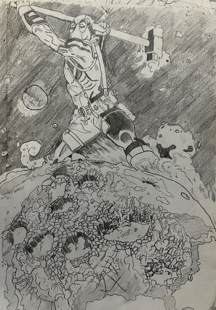
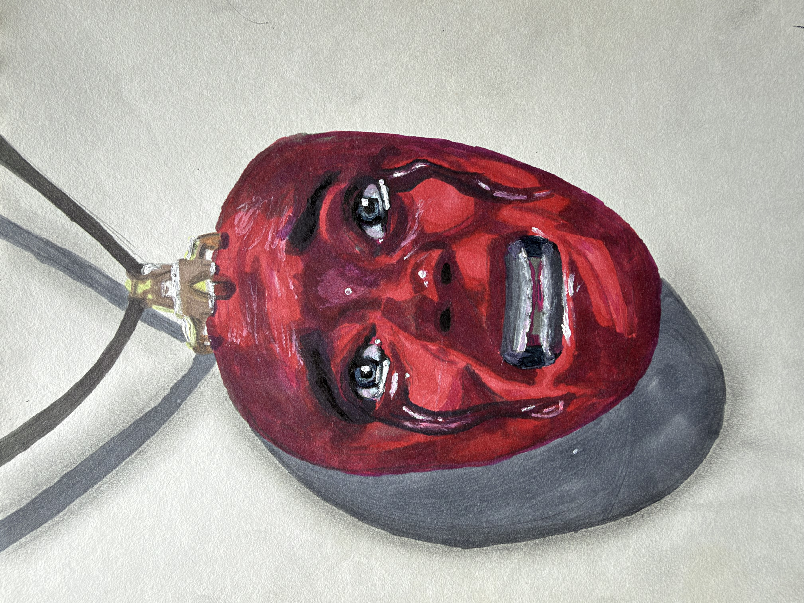
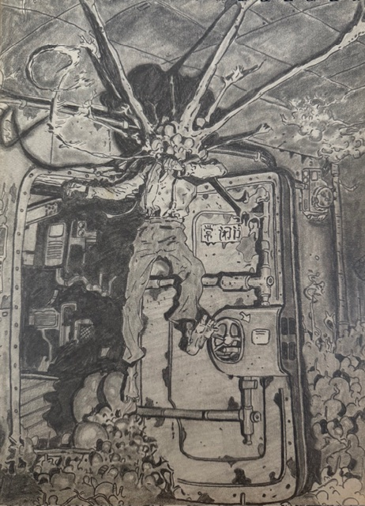
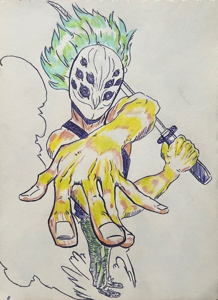
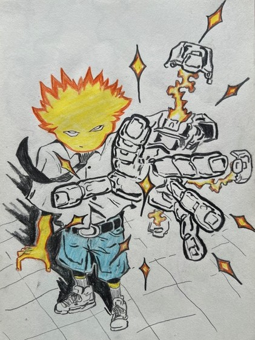
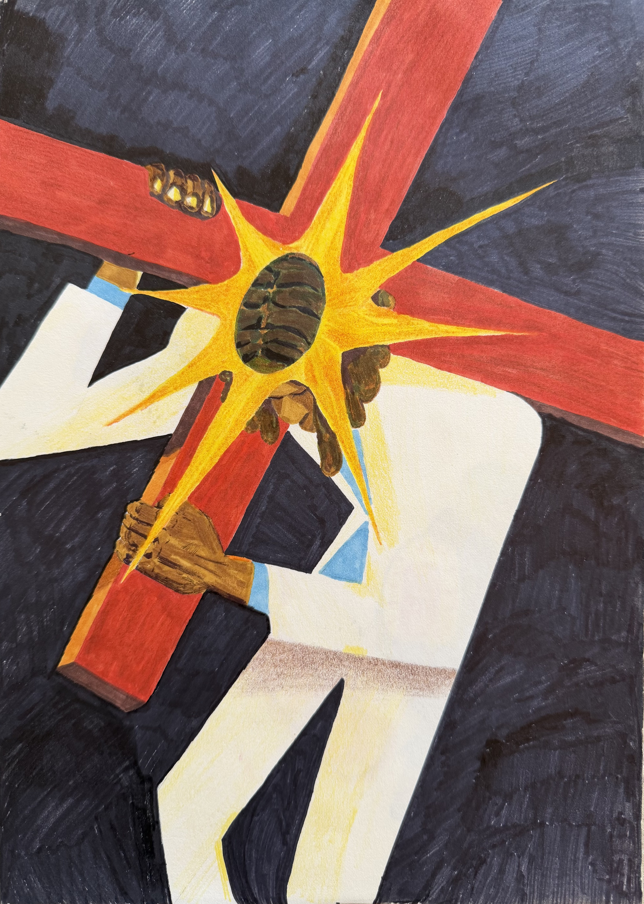
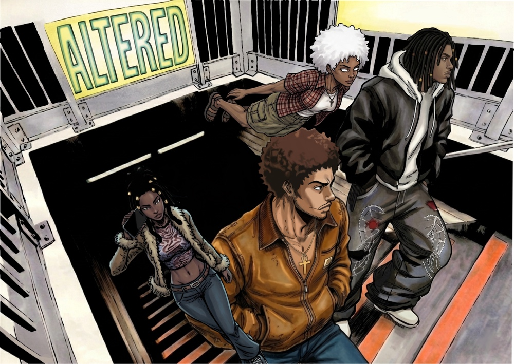

2020

This is one of my first drawings during the covid era, i took some inspirations from comics and a bit of boredom, and i was able to sketch a deadpool comic panel with just a single 2B pencil.
COLLECTION 004
2020

This is one of my first drawings during the covid era, i took some inspirations from comics and a bit of boredom, and i was able to sketch a deadpool comic panel with just a single 2B pencil.
2021

During this year, i explored different color palettes and references from the berserk story to draw this sketch and use shadows and different colors to test out my skills.
2022

This particular drawing or rather year, i had this commitment to make drawings that expanded whole sketch pages rather than one design in the center, and although i fell in-love with wide environmental drawings like this, it took months even to finish this drawing.
2023

Truth be told this was the year i was still trying to find my preferred style, but then i found an artist online with goofy sketches and i followed his art style. From there i started making up close goofy, cartoonish and fashioned like sketches, but i still lacked my own original touch.
2024

Same thing with the previous year, except i didn't make as much art pieces, but i somehow learned to use fashion more and make cartoon like characters with inspirations from fashion trends.
2025

This was my most creative year without doubt. During this era i started mastering my contrasts, my color choices, and found much inspirations from pinterest. In this sketch, i used multiple color variations and some architectural structures to come up with a desing like that.
2026

At the beginning of the year i decided to get an ipad and expand my skills to the digital style since i got multiple requests to start digital art. This particular digital piece, is from a comic book cover i was requested to design for.